LED
Topik Bahasan
Implementasi program Running LED
Kemampuan Akhir yang Direncanakan
- Mahasiswa mampu menjelaskan cara kerja digitalWrite
- Mahasiswa mampu mengimplementasi Coding Running LED
- Mahasiswa mampu melakukan pengembangan simulasi LED
- Mahasiswa mampu membedakan LED Anode dan Cathode
Teori Singkat
Mikrokontroler
Mikrokontroler adalah suatu chip berupa IC (Integrated Circuit) yang dapat menerima sinyal input, mengolahnya dan memberikan sinyal output sesuai dengan program yang diisikan ke dalamnya. Sinyal input mikrokontroler berasal dari sensor yang merupakan informasi dari lingkungan sedangkan sinyal output ditujukan kepada aktuator yang dapat memberikan efek ke lingkungan. Jadi secara sederhana mikrokontroler dapat diibaratkan sebagai otak dari suatu perangkat/produk yang mempu berinteraksi dengan lingkungan sekitarnya.
Mikrokontroler pada dasarnya adalah komputer dalam satu chip, yang di dalamnya terdapat mikroprosesor, memori, jalur Input/Output (I/O) dan perangkat pelengkap lainnya. Kecepatan pengolahan data pada mikrokontroler lebih rendah jika dibandingkan dengan PC. Pada PC kecepatan mikroprosesor yang digunakan saat ini telah mencapai orde GHz, sedangkan kecepatan operasi mikrokontroler pada umumnya berkisar antara 1 – 16 MHz. Begitu juga kapasitas RAM dan ROM pada PC yang bisa mencapai orde Gbyte, dibandingkan dengan mikrokontroler yang hanya berkisar pada orde byte/Kbyte.
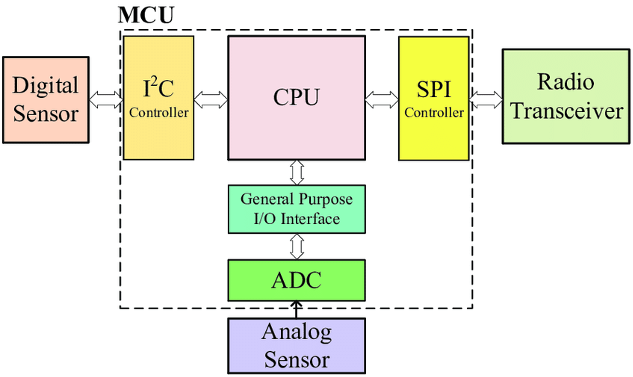
Block Diagram MCU
Sistem yang menggunakan mikrokontroler sering disebut sebagai embedded system atau dedicated system. Embeded system adalah sistem pengendali yang tertanam pada suatu produk, sedangkan dedicated system adalah sistem pengendali yang dimaksudkan hanya untuk suatu fungsi tertentu. Sebagai contoh, printer adalah suatu embedded system karena di dalamnya terdapat mikrokontroler sebagai pengendali dan juga dedicated system karena fungsi pengendali tersebut berfungsi hanya untuk menerima data dan mencetaknya. Hal ini berbeda dengan suatu PC yang dapat digunakan untuk berbagai macam keperluan, sehingga mikroprosesor pada PC sering disebut sebagai general purpose microprocessor (mikroprosesor serba guna). Pada PC berbagai macam software yang disimpan pada media penyimpanan dapat dijalankan, tidak seperti mikrokontroler hanya terdapat satu software aplikasi. Penggunaan mikrokontroler antara lain terdapat pada bidang-bidang berikut ini:
- Otomotif : Engine Control Unit, Air Bag, fuel control, Antilock Braking System, sistem pengaman alarm, transmisi automatik, hiburan, pengkondisi udara, speedometer dan odometer, navigasi, suspensi aktif.
- perlengkapan rumah tangga dan perkantoran : sistem pengaman alarm, remote control, mesin cuci, microwave, pengkondisi udara, timbangan digital, mesin foto kopi, printer, mouse.
- pengendali peralatan di industri.
- robotika.
selain itu ada banyak jenis board microcontroller yang dapat digunakan dalam pengembangan project Internet of Things, salah satu jenis board yang umum dipakai adalah Arduino dan NodeMCU.
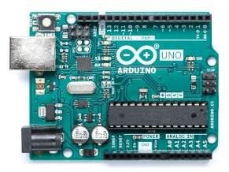
Arduino UNO

NodeMCU
NodeMCU Development Board
NodeMCU adalah mikrokontroller yang dibuat berdasarkan chip WiFi ESP8266, jadi NodeMCU adalah seperti arduino biasa yang dapat di flash instruksi tertentu sesuai dengan keinginan kita namun memiliki fitur WiFi, sehingga dapat berinteraksi dengan perangkat client jaringan atau bahkan dengan internet.
NodeMCU juga merupakan development board yang juga menyediakan firmware berbasis eLua untuk chip WiFi ESP8266 dari vendor Espressif. Firmwarenya berbasis Espressif NON-OS SDK dan menggunakan file system berbasis spiffs. Repositori kodenya sendiri berisi 98.1% C-code. Firmware NodeMCU adalah projek pendukung dari development kit NodeMCU yang sangat populer, yang juga menyertakan development board open-source siap pakai yang menggunakan chip ESP8266-12E.
Pemrograman NodeMCU dapat dilakukan dengan mudah sebagaimana menggunakan Arduino. Perbedaan utamanya adalah pada bagian penomeran pin dari boardnya, seperti terlihat pada gambar berikut:
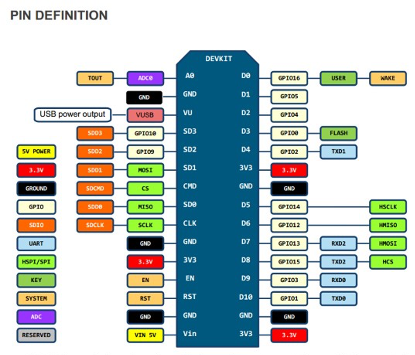
Ada beberapa jenis development board NodeMCU yang umum di jual di pasaran, yaitu jenis Amica dan Lolin. Yang membedakan diantara keduanya hanya pada ukuran dan urutan nomor dari GPIO pin nya.
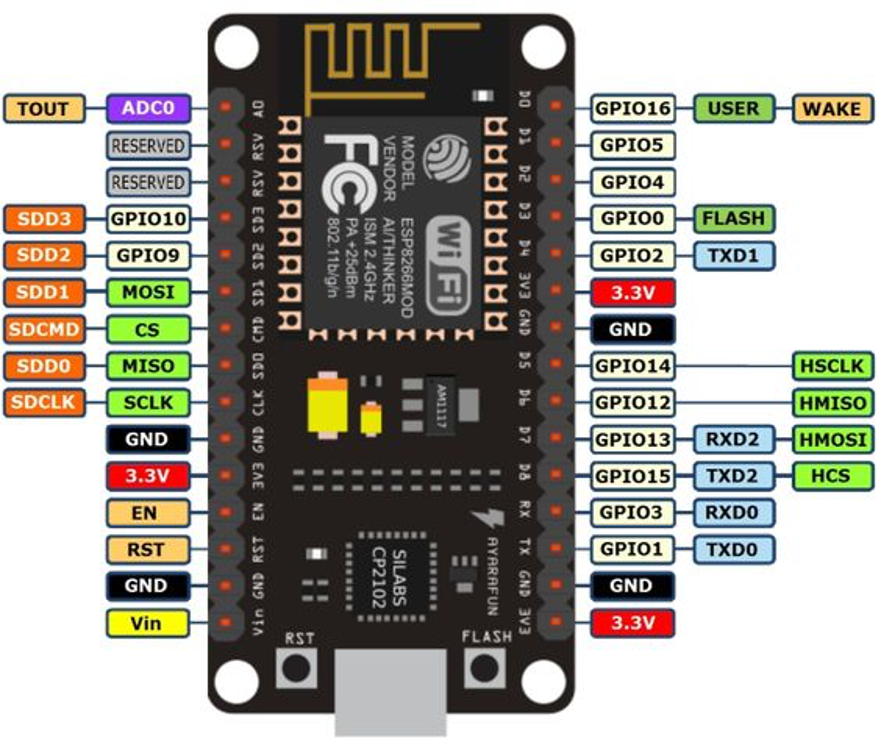
NodeMCU versi Lolin
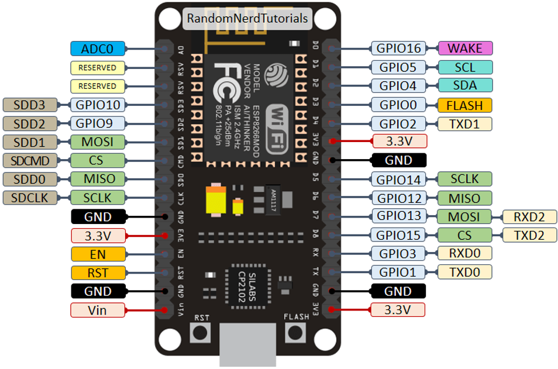
NodeMCU versi AMICA
LED
LED atau akronim dari light-emitting diode adalah sebuah sumber cahaya semikonduktor yang memancarkan cahaya ketika
arus mengalir melaluinya. Secara umum yang sering digunakan terdiri dari 2 jenis LED dengan satu warna(memiliki 2 kaki)
dan LED dengan tiga warna(memiliki 4 kaki) atau sering disebut juga dengan LED RGB, yang akan dibahas di sini adalah LED
RGB.
Berikut ini adalah gambar dari LED RGB
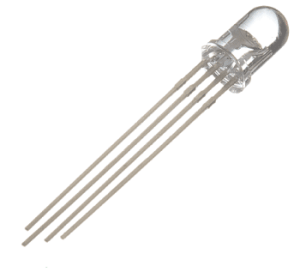
Pada gambar di atas LED RGB terdapat 4 kaki, dimana kaki terpanjang adalah bagian ground atau tegangan tergantung dari jenis LED. Kemudian untuk 3 kaki yang lain adalah warna merah, hijau, dan biru.
Walaupun LED RGB hanya terdapat 3 warna, tetapi kita bisa menggabungkan untuk mendapatkan warna yang lain. Sebagai contoh akan menghidupkan/menghasilkan warna kuning berarti LED warna hijau dan merah perlu diberikan tegangan, ilustrasinya dapat ditunjukkan pada gambar di bawah ini
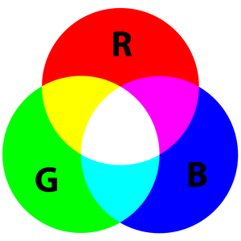
LED RGB terdiri dari 2 jenis yaitu common annode dan common cathode, common annode adalah salah satu kaki memiliki kutub positif sedangkan common cathode salah satu kaki memiliki kutub negatif. Kaki yang memiliki kutub positif atau negatif biasanya memilik bentuk fisik yang paling panjang. Gambaran umum dari kedua jenis LED tersebut dapat ditunjukkan pada gambar di bawah ini

Untuk mengetahui LED annode ataupun LED cathode dapat menggunakan multimeter, caranya sama seperti ketika mencari arus dengan menghubungkan sisi positif/negatif pada kaki paling panjang pada LED RGB dan sisi positif/negatif pada multimeter dihubungkan pada kaki yang lainnya(kaki untuk warna merah, hijau, ataupun biru). Ketika menyala berarti kita bisa mengkategorikan LED tersebut.
Mengetahui jenis LED RGB yang digunakan(annode ataupun cathode) sangat penting, karena berpengaruh terhadap pemasangan di microcontroller ataupun Raspberry yang digunakan.
Cara Mencoba LED Menggunakan Multimeter
Untuk mengetahui apakah LED berfungsi dengan baik bisa menggunakan multimeter, untuk lebih jelasnya dapat dilihat pada gambar di bawah ini

Praktikum
Project 1: Running LED RGB
Pada project ketiga ini akan dilakukan percobaan untuk menyalakan lebih dari satu LED secara teratur dan berurutan (running lED), siapkan beberapa komponen yang dibutuhkan dan rangkailah komponen tersebut pada project board.
Hardware Preparation:
- NodeMCU x 1
- LED RGB x 1
- 220 ohm resistor x 3, optional
- Kabel Dupont (male to male)
- Micro USB cable x 1
- PC/laptop x 1
Software Visual Studio Code
Rangkailah komponen-komponen yang diperlukan seperti pada gambar berikut
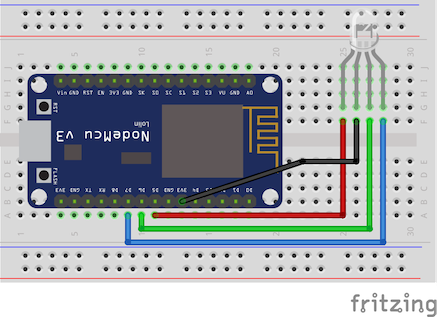
Tanpa resistor
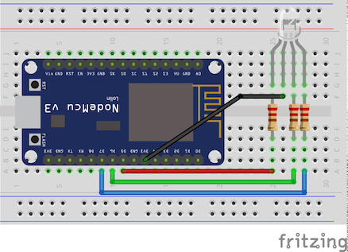
Dengan resistor
Resistor digunakan untuk menyeimbangkan arus yang akan dialirkan ke LED, sehingga ketika menggunakan resistor LED tidak rusak atau putus karena kelebihan arus
Dari gambar di atas dapat dilihat pengkabelan seperti pada tabel di bawah ini
| ESP8266 Amica | LED RGB |
|---|---|
| D5 | Red |
| D6 | Green |
| D7 | Blue |
| Vin/3V3 | Tegangan |
Selanjutnya tuliskan kode program berikut pada Visual Studio Code
#include <Arduino.h> #define RED_LED D5 //led warna merah #define GREEN_LED D6 //led warna hijau #define BLUE_LED D7 //led warnah biru void setup() { Serial.begin(115200); pinMode(RED_LED,OUTPUT);//atur pin-pin digital sebagai output pinMode(GREEN_LED,OUTPUT); pinMode(BLUE_LED,OUTPUT); Serial.println("Contoh Program LED RGB"); } void rgbLED(){ digitalWrite(RED_LED, HIGH); digitalWrite(GREEN_LED, LOW); digitalWrite(BLUE_LED, LOW); Serial.println("LED Merah nyala"); delay(1000); digitalWrite(RED_LED, LOW); digitalWrite(GREEN_LED, HIGH); digitalWrite(BLUE_LED, LOW); Serial.println("LED Hijau nyala"); delay(1000); digitalWrite(RED_LED, LOW); digitalWrite(GREEN_LED, LOW); digitalWrite(BLUE_LED, HIGH); Serial.println("LED Biru nyala"); delay(1000); } void loop() { rgbLED(); }Untuk nilai
HIGH dan LOWsilakan disesuaikan dengan jenis LED yang digunakan, karena nanti akan menyebabkan masing-masing warna LED kurang terang atau jernih. Normalnya warnanya akan jernih, tidak bercampur dengan warna yang lain.Upload Sketch program diatas ke board NodeMCU
- Segera setelah proses compile dan upload selesai, LED pada rangkaian project board akan menyala secara berurutan dengan jeda waktu 1 detik
Project Wokwi
Kemudian Anda bisa mendesign rangkaian menggunakan Wokwi, tetapi sayangannya untuk board ESP8266 belum tersedia sehingga membutuhkan penyesuaian GPIO ketika program tersebut dijalankan. Sesuai dengan penjelasan di atas untuk keterangan GPIO ESP8266 bisa merujuk di sini, sedangkan ESP32 bisa merujuk di sini.
- Silakan masuk ke Wokwi - Buat projeact baru - Pilih boardnya ESP32
Buatlah sebuah rangkain seperti pada gambar berikut
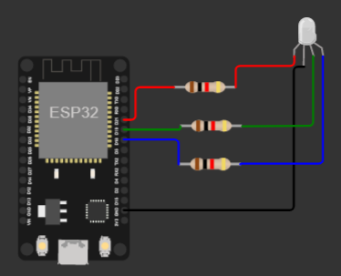
Sehingga untuk rangkaian menjadi seperti berikut
| ESP32 | LED RGB |
|---|---|
| 21 | Red |
| 19 | Green |
| 18 | Blue |
| Vin/3V3 | Tegangan |
- Sedangkan untuk kode program modifikasi sedikit untuk mendeklarasikan GPIO sehingga menjadi seperti berikut
#define RED_LED 21 //led warna merah #define GREEN_LED 19 //led warna hijau #define BLUE_LED 18 //led warnah biru - Download project tersebut pada sub menu
Download project ZIPdi Wokwi. Setelah didownload terdapat filewokwi-project.txt, file project dengan ekstensi *.ino, dan diagram.json. Buatlah project pada Visual Studio Code, jangan lupa memiliki boardnya
DOIT ESP32 DEVKIT V1, copy file *.ino ke dalam folder src serta diagram.json pada direktori project VS Code.Buatlah file
wokwi.tomlyang berisi informasi lokasi hasil compile atau file binary pada direktori project VS Code, yang berisi seperti berikut[wokwi] version = 1 elf = ".pio/build/esp32doit-devkit-v1/firmware.elf" firmware = ".pio/build/esp32doit-devkit-v1/firmware.bin"Sehingga untuk struktur direktori lengkap seperti berikut
. ├── diagram.json ├── include │ └── README ├── lib │ └── README ├── platformio.ini ├── src │ └── sketch.ino ├── test │ └── README └── wokwi.toml- Silakan dijalankan dengan menekan tombol F1 dan pilih
Wokwi: Start Simulator. Jika semua normal maka akan menampilkan seperti pada gambar berikut ini
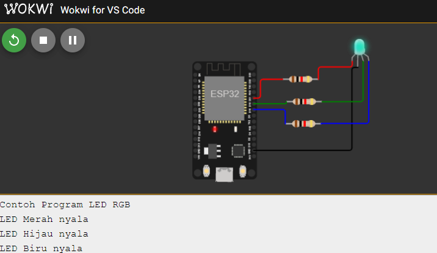
Project 2: SOS LED
Pada project ketiga ini akan dilakukan percobaan untuk menyalakan lebih dari satu LED secara teratur sesuai sandi morse SOS, untuk komponen yang dibutuhkan dan rangkaian masih menggunakan komponen pada projek yang sebelumnya.
- Buat project menggunakan Visual Studio Code dengan nama
vs-program2 Selanjutnya tuliskan kode program berikut pada Visual Studio Code
#include <Arduino.h> #define RED_LED D5 //led warna merah #define GREEN_LED D6 //led warna hijau #define BLUE_LED D7 //led warnah biru void setup() { Serial.begin(115200); pinMode(RED_LED, OUTPUT); //atur pin-pin digital sebagai output Serial.println("Contoh Program LED SOS"); } void loop() { // 3 dits (3 titik atau huruf S) for (int x = 0; x < 3; x++) { digitalWrite(RED_LED, HIGH); // LED nyala delay(150); // delay selama 150ms digitalWrite(RED_LED, LOW); // LED mati delay(100); // delay selama 100ms } delay(100); // 3 dahs (3 garis atau huruf O) for (int x = 0; x < 3; x++) { digitalWrite(RED_LED, HIGH); // LED nyala delay(400); // delay selama 400ms digitalWrite(RED_LED, LOW); // LED mati delay(100); // delay selama 100ms } // 100ms delay to cause slight gap between letters delay(100); // 3 dits again (3 titik atau huruf S) for (int x = 0; x < 3; x++) { digitalWrite(RED_LED, HIGH); // LED nyala delay(150); // delay selama 150ms digitalWrite(RED_LED, LOW); // LED mati delay(100); // delay selama 100ms } // wait 5 seconds before repeating the SOS signal delay(5000); }Upload Sketch program diatas ke board NodeMCU
- Segera setelah proses compile dan upload selesai, LED pada rangkaian project board akan menyala secara berurutan dengan jeda waktu 1 detik
Lakukan juga untuk praktikum yang ke-2 menggunakan Wokwi, dari diagram sampai dengan program yang berjalan pada Wokwi dan VS Code.
Video Pendukung
Tugas
- Kembangkan praktikum ke-2(SOS) sehingga ada 3 LED yang digunakan yaitu merah, hijau dan biru. LED hijau menggunakan LED RGB, sedangkan untuk LED biru dan LED merah menggunakan LED yang terdapat pada ESP8266. Buatlah skematik(gambar pengkabelannya) dan kode programnya!
- Kumpulkan laporan dan tugas di LMS
- Sertakan juga dokumentasi link dalam bentuk video untuk masing-masing praktikum yang telah kelompok Anda lakukan.
Hasil Tugas yang Diharapkan